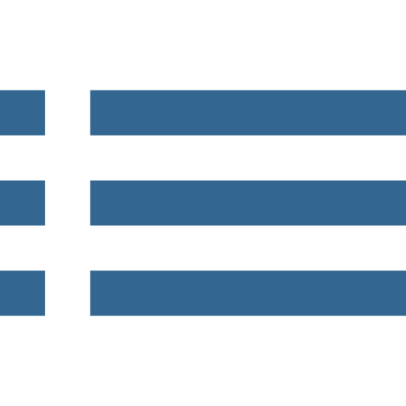

Software Catalogue 
Administration & Development Tools
72 product(s) were found in this category.
0ra2PG
| Product | 0ra2PG |
|---|---|
| Description | Ora2Pg is a free tool used to migrate an Oracle database to a PostgreSQL compatible schema. It connects your Oracle database, scan it automaticaly and extracts its structure or data, it then generates SQL scripts that you can load into your PostgreSQL database. Ora2Pg can be used from reverse engineering Oracle database to huge enterprise database migration or simply to replicate some Oracle data into a PostgreSQL database. It is really easy to used and doesn't need any Oracle database knowledge than providing the parameters needed to connect to the Oracle database. |
| Licence | Open source |
| Pricing info | Free |
| Publisher | Dalibo |
Admin4
| Product | Admin4 |
|---|---|
| Description | Admin4 is a tool for server maintenance via several plugin modules, running on Windows, Mac OSX, Linux and many more platforms. Currently, plugins for BIND DNS, LDAP and PostgreSQL are included. It is designed as a framework, using Python for fast development of plugins and custom modifications. |
| Licence | Open source |
| Publisher | Admin4 Project |
Barman
| Product | Barman |
|---|---|
| Description | Barman (Backup and Recovery Manager) is an open-source administration tool for disaster recovery of PostgreSQL servers written in Python. It allows an organisation to perform remote backups of multiple servers in business critical environments and help DBAs during the recovery phase. Barman most wanted features include backup catalogs, retention policies, remote recovery, archiving and compression of WAL files and backups. Barman is open source, and its code is distributed under GNU General Public License 3 terms. For more information and downloads: |
| Licence | Open source |
| Pricing info | Free |
| Publisher | 2ndQuadrant Italia |